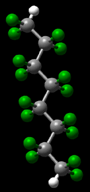

|
|
|  |
Here is a list of new articles:
Here is a list of corporate polymer-related websites:
Here are some interesting areas of polymer research:
Here are a few general polymer sites: Here are some interesting Java pages: Quite possibily the foremost plastics site for engineers: |